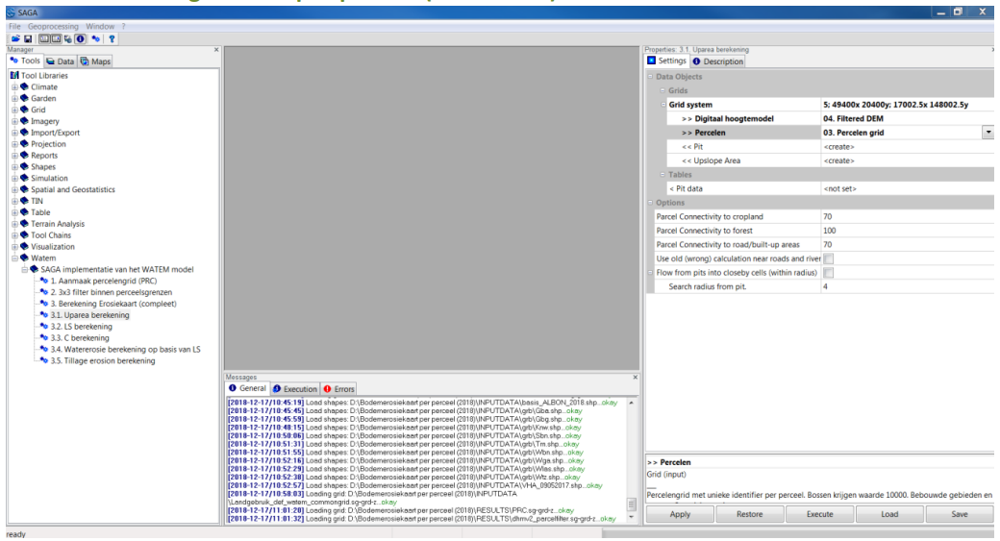
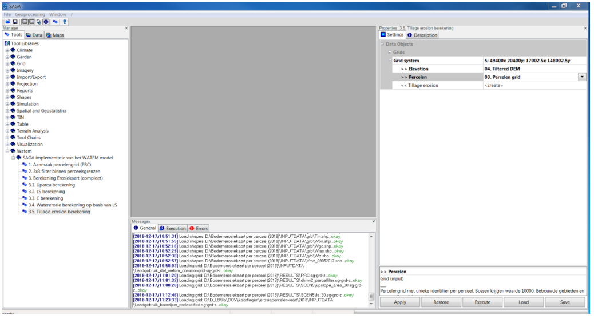
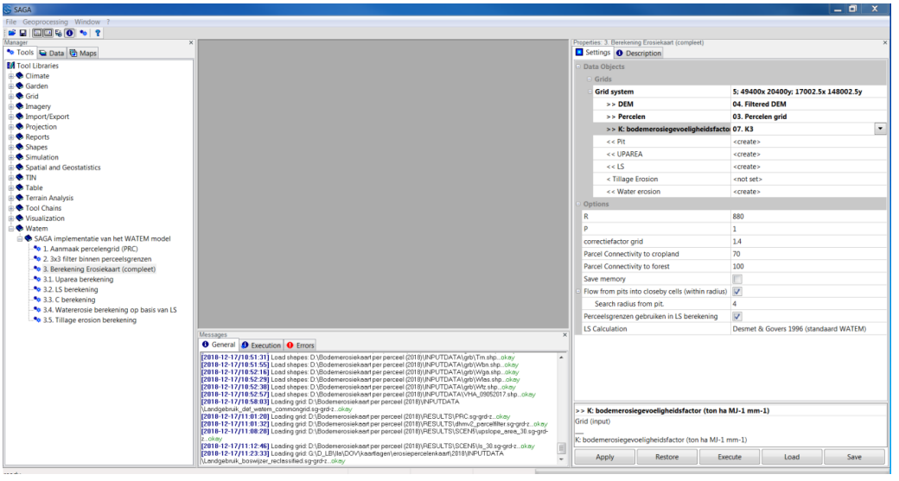

Getting started¶
The current module contains a number of tools to compute the erosion map. The available tools can be categorized in three categories:
Core functionalities to compute the erosion map with WaTEM.
Extra tools to prepare input data for core computations.
Topology-tooling: used to topologize river networks (not used in the Flanders application).
The main aim of this page is to illustrate with the SAGA-GUI how the erosion map can be computed. It is important to note that the extra tooling was developed to process input data available in Flanders (see Application to Flanders).
The information for the tolopogy-tool is found here
The WaTEM module¶
In SAGA GIS, all modules can be called from the “Geoprocessing” menu, in the ‘Watem’ submenu.

Figure 1: Calling the WaTEM module from the menu
It is also possible to launch the same modules from the tools tab in the “manager” window. The description tab then also displays the module’s documentation.

Figure 2: Calling up the WaTEM module via the “manager” window
The import grids are displayed in the interface with “>>” This means that they are mandatory for import. Output grids (or shapefiles) start by default with “<<” for mandatory output and “<” for optional output.
Compute water erosion¶
Calculation of the upslope area (module 3.1) #TODO

Figure 3: Module 3.1. Uparea calculation
LS Calculation (module 3.2) #TODO

Figure 4: Module 3.2. LS calculation
C calculation (Module 3.3) #TODO

Figure 5: Module 3.3. C calculation
Water erosion calculation based on LS (module 3.4) #TODO

Figure 6: Module 3.4. Water erosion calculation based on LS
Treatment erosion calculation (module 3.5) #TODO
Tillage erosion is not included in the annual Potential soil erosion map per plot.

Figure 7: Module 3.5. Tillage erosion calculation
There is also a single tool that can be used to compute the erosion map with one command

Figure 8: Module 3. Erosion map calculation (complete).
Initially, under “Grid system” you need to select the correct system. Then the other grids can be selected. In this module, the machining erosion can optionally also be calculated. If no value is given here, this calculation will not be performed.